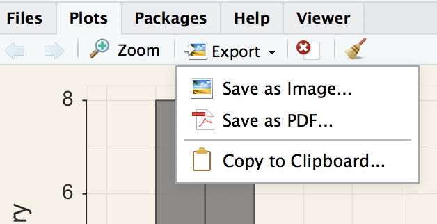
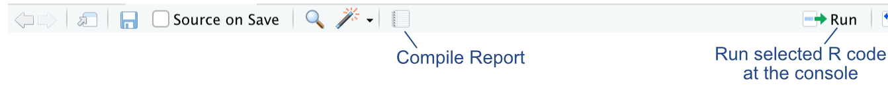
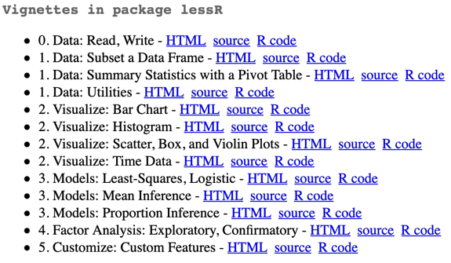

3 More Stuff
3.1 Report Generation
Follow one of three strategies for reporting your work in R. The choice of format to use is yours. One method is to do a manual copy and paste from R output, text and graphics, into a word processing document such as Word. Or, let R do the work for you, using one of two methods: Compile Report or Quarto. The Quarto method is ultimately more useful, but for this class the Compile Report method works just fine.
3.1.1 Copy and Paste
For the first technique, manually construct a word processing document, such as for a homework assignment. Copy and paste text and graphics output from R into the MS Word or other word processing app document.
Text: All input and output to the R Console, with or without RStudio, is pure text. So select and copy the desired output and paste into MS Word or, for example, an email (no screenshot). Display the text in a mono-spaced font, such as Courier New. First, this lines up the columns of tables, and second, this distinguishes computer output in your writing from words that you write yourself, such as interpretative text.
Visualizations: For RStudio use the Export button at the top of the window pane for Plots. Then select Copy to Clipboard and paste into the app such Word. Generally, re-size the image to better fit on the page, shown in Figure Figure 3.1.

If running R by itself, right-click on each visualization, select Copy.
3.1.2 Compile a Report
Save R input instructions in a text file and run as a single unit with output to MS Word. From the File --> New File --> R Script menu sequence create a new file and save. Or, start with the + sign at the top-left corner of the RStudio window to create the new text file. Then enter the R instructions into the text file window pane.
From the window pane, run the code with the Run button at the top-right of the window-pane for the file, shown in Figure 3.2. Or, even better, click on the Compile Report button. Then choose MS Word as the output medium.

The entire R analysis will run and output to Word, including the visualizations. From there, edit the Word document as desired. Video: Compile Report [4:40]
The only issue with the Word output is that if used for homework, there are no homework questions. Either copy and paste the questions into the Word doc from R, or the reverse copy sections from the R output into the homework assignment.
3.1.3 Report from Quarto
The most flexible technique from which to deliver an analysis straight from R uses what is called markdown to construct the report (such as this document). Follow these directions.
Develop your reports that use R for analytics directly in RStudio using Quarto as a single, integrated report. The output can be HTML for a web page, or .docx for MS Word. R can directly generate web pages and Word documents (plus pdf’s) as standard output using Quarto. To apply to homework assignments, copy and paste the homework questions into an RStudio text file, perhaps just the worked problems part of the homework. Then adjust R code as needed, plus your interpretations.
Again, a relatively small investment of time to obtain more useful skills for doing data analysis.
3.2 Miscellaneous
3.2.1 Get Help
Get Help. lessR contains several documented sets of examples, called vignettes, each of which explains how to do a specified analysis. Access the vignettes with the R function call browseVignettes("lessR"). The output is shown in Figure Figure 3.3, which opens on a web page. Click on an HTML link for a given vignette to view its web page.

Alternatively, as previously indicated, access the R manual for a function by entering a ? followed by the function name.
3.2.3 Color Themes
Data visualizations can be styled in different ways. The lessR style() function provides many color themes. The default is colors. Other styles include darkred and lightbronze. To change the style for all subsequent visualizations, enter the chosen theme name in quotes.
style("darkred")
A call to the style function with a new theme changes many colors at once.
Individual properties of a visualization can also be customized separately from the entire theme. Two essential parameters for individual customization:
fillfor the interior color of a region such as a bar or a pointcolorfor the color of a line segment, either by itself or as the edge of a region such as a bar or point.
To see all available theme and individual properties amenable to customization, enter: style(show=TRUE)
Generally, rely upon the default styles, but customize as desired.
3.2.2 Comments
R recognizes as a comment any information that follows a # sign, either at the start of a new line or any place on an existing line, and write any comment you wish after that # sign that describes what the corresponding R code accomplishes. That helps you understand what you did at a later time.